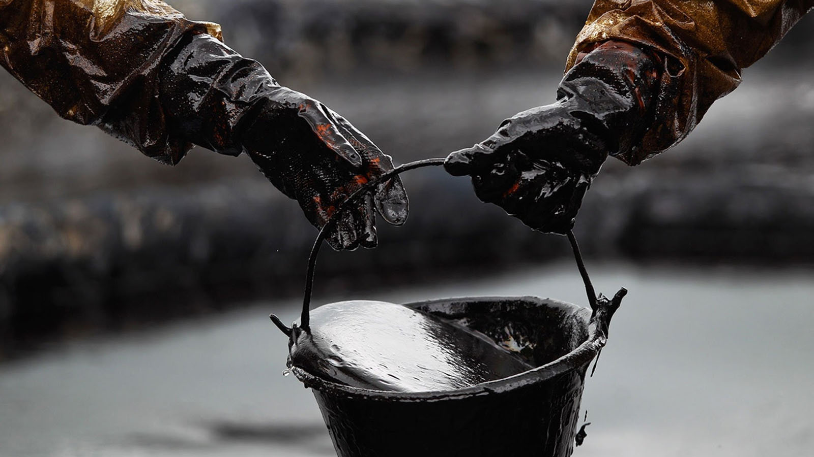
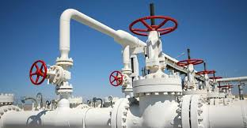
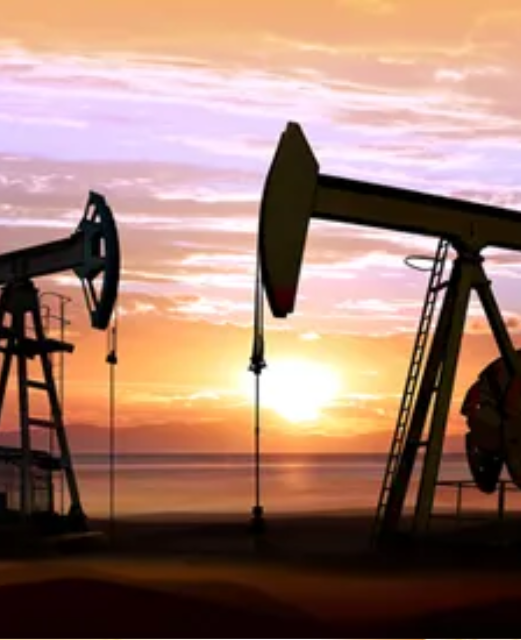

A economia do Oriente Médio é profundamente influenciada por seus recursos naturais,
especialmente petróleo e gás natural. Aqui estão os principais aspectos:
1. Petróleo
• Reservas Significativas: O Oriente Médio possui cerca de 50% das reservas conhecidas
de petróleo do mundo, com países como Arábia Saudita, Irã, Iraque e Kuwait liderando
a produção.
• Economia Dependente: A maioria dos países da região é fortemente dependente da
receita do petróleo. Isso pode levar à vulnerabilidade econômica, especialmente em
tempos de flutuação dos preços.

2. Gás Natural
• Reservas e Produção: O Qatar possui as maiores reservas de gás natural do mundo,
enquanto Irã e Arábia Saudita também são grandes produtores. O gás é vital para a
geração de energia e exportação.
• Projetos de Infraestrutura: A construção de gasodutos e projetos de liquefação tem
sido uma prioridade, aumentando a capacidade de exportação.

3. Diversificação Econômica
• Iniciativas Recentes: Muitos países, como os Emirados Árabes Unidos e a Arábia
Saudita, estão investindo em diversificação econômica. Projetos em turismo,
tecnologia e energias renováveis visam reduzir a dependência do petróleo.
• Visões de Futuro: A "Visão 2030" da Arábia Saudita, por exemplo, busca transformar a
economia e atrair investimentos estrangeiros.

4. Agricultura
• Desafios: A agricultura enfrenta desafios devido a condições climáticas adversas e
escassez de água. No entanto, algumas regiões, como a Turquia e partes do Irã, têm
setores agrícolas robustos.
• Tecnologia e Inovação: Investimentos em agricultura de precisão e tecnologias
sustentáveis estão sendo explorados para melhorar a produção.

5. Recursos Minerais
• Mineração: O Oriente Médio também possui depósitos de minerais, como cobre, ferro
e fosfato, que estão começando a ser explorados mais intensivamente.
6. Impactos Sociais e Ambientais
• Desigualdade: A riqueza proveniente do petróleo nem sempre é distribuída de forma
equitativa, levando a desigualdades sociais.
• Mudanças Climáticas: A exploração dos recursos naturais e a dependência de
combustíveis fósseis levantam preocupações sobre os impactos ambientais e a
sustentabilidade a longo prazo.
• Conflitos e Instabilidade: A riqueza em recursos naturais muitas vezes está no centro
de conflitos, como em casos de disputas territoriais e rivalidades sectárias.
VOLTAR